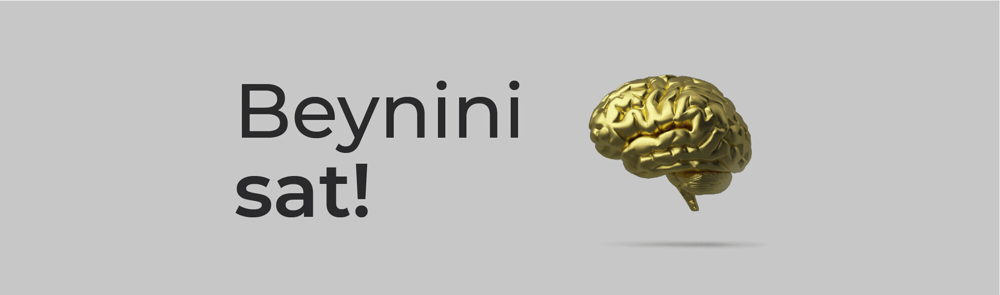

Beynini Sat!
Salam, mən Mirzəyev Camal Qrafik Dizayner!
Beyninin həqiqətən satıldığını düşün, bəli beynin satılır.
Ətrafımda iş axtaran insanların əksəriyyəti bunu düşünmür! Bunu düşünmək həqiqətən vacibdirmi. Fikrimcə düşünüləcək ən vacib məsələdir. Çünki, insan bədənində satılacaq yeganə hissənin beyin olduğunu düşünürəm.
İlk öncə: Beyninin həqiqətən satılması üçün hazır olduğunu düşün, məncə beynin satılacaq qədər dəyərli olmadığını düşünürsənsə, onu qiymətli edəcək bir şeylərlə doldur. Bunlar hər sahə üçün fərqli şeylərdi.
İlk addım sonrası: Beynində artıq qiymətli informasiyanın olduğunu düşünürsənsə, ona bir qiymət çıxar bu 1 manatdan başlaya bilər, yox əgər bunu bacarmırsansa oxşar beyin tap kənardan və onun neçəyə satdığına bax beynini. (Məsələn 1000 manat)
Qiymətləndirmə addımından sonra: Həqiqətən bu beynin o qiymətə dəydiyinə inan, çünki buna sən inanmırsansa qarşındakı insanı heç inandıra bilməssən. Özünə əmin ol, güvən və sat bu beyni!
Yaddan çıxarılmayacaq bir şey var: Əgər sən bir şeylə məşğul olursan və onu istəyərək ardınca gedirsənsə, o sonda alınacaq buna inan, əgər buna inanmayacaqsansa, qarşında sənə iş verən insan heç inanmayacaq. Çünki, səndə şirkətində güvənsiz işci istəməzsən. Fikrimcə işsizlik özü çox geniş bir iş sahibi olmaqdı. İşlədiyin dövr - iş tapana qədər işləməkdir əslində, işsizlik dövründə öz üzərində işləməsəydin indi iş sahibi olmazdın.
Həyatının müəyyən hissəsində çəkilməyən əziyyət, bir ömür əziyyət çəkməyinə səbəb ola bilər. Dayanma! Sən dayana bilərsən , amma dünya dayanmayacaq!
Qalx güzgünün qarşısına keç, sat o adama beynini, nəyə qadir olduğunu birinci o güzgüdəki adama sübut et! Sonra ətrafdakılara özü sübut edəcək.